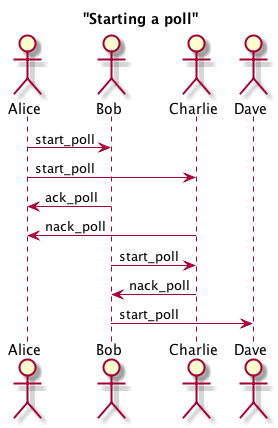

Based on Kademlia (Maymounkov and Mazieres 2002) and its extension S/Kademlia (Baumgart and Mies 2007). Each node is identified by a nodeId which is computed using a crypto puzzle. The puzzle generates also a key pair that is used to sign and verify integrity of messages.
Kademlia uses four RPCs for node / value lookup, routing table maintenance and storing values in the DHT:
ping: usual ping / pong request to check liveness of nodes;store: instructs the target node to store a (key, value) pair;find_node: takes a nodeId as an argument and the recipient of the request returns a list of k triples (IPaddr, UDPport, nodeId) of nodes closest to the queried nodeId;find_value: behaves like find_node with the exception that if the target node has previously received a store request for the target key, it will return the stored value directly.At the moment Concord implements only ping and find_node RPCs. This is because the other ones seem related to a file-sharing application. The future development of the voting protocol will tell us if and in what extent Concord will need to implement store and find_value procedures.
Nodes are stored in a DHT (Distributed Hash Table). The local DHT is organized in k-buckets. For each bit in the nodeId, a node maintains a k-bucket, that is a FIFO list of nodes sorted with a last-seen policy (least recently seen node at the head). Let be n the number of bits in the nodeId. Each node maintains n k-buckets and each of them contains nodes at distance between 2i and 2i + 1 ∀i ∈ {0, ..., n − 1}.
In the above Figure, we show Kademlia's DHT for nodeId 1100 in a network where the ID space is in 4 bits. Each color corresponds to a different k-bucket's range. In each k-bucket node IDs can be present or not (in the Figure, all nodes are shown as present) and each node maintains locally a list of k nodes for each bucket. Note also that each k-bucket is responsible for progressively twice the number of node IDs when moving away from the local node's ID, that is ni = 2ni − 1∀i ∈ {1, ..., n − 1} and n0 = 1 where ni is the number of possible node IDs in bucket i. By moving away from the current node ID, each k-bucket covers twice the number of node IDs.
The goal of this protocol is to allow anyone to create a poll and collect opinions on it. Each node is itself a voter and everyone is free to participate in the voting process. Each voter is also responsible of verification of votes and votes counting.
Whenever someone wants to start a poll, he / she has to send a start_poll RPC. This procedure contains the poll's question and its hash, computed from the text and a nonce. This hash is then used to build the poll's Merkle tree (details to come in a later section). Each node that wants to take part in the poll, has to find a key pair for which the hash of the public key is numerically less then the start_poll genesis hash (the created with the aforementioned RPC). The process is similar to the nodeId generation in S/Kademlia and is used to prevent huge amounts of valid key pairs for a single poll. The start_poll message contains also a TTL (time-to-live) indicating the maximum time allowed to find a valid key pair for the poll. TTL and crypto puzzle difficulty are measures that control the ability of nodes to generate an high number of valid key pairs.

The node that starts the poll is responsible of sending the start_poll RPC to other nodes. To do so it has to send the RPC to all nodes that it knows about and sends the same request to other nodes that discovers through recursively call find_node on new nodes that discovers. Another strategy / extension could be to start searching for nodes randomly by generating a random nodeId starting a recursive lookup for that node and sending start_poll requests along the way. Nodes that decide to participate in the poll sends an ack_poll back to the node from which came to know about the poll. This RPC does not contain nodes and means that the node is taking responsibility to forward the start_poll message to its neighbors (all nodes that it knows about or only k closest neighbors are options). Nodes that do not want to participate in the poll send an nack_poll RPC containing its k closest nodes.
After the TTL expires, each node participating in the poll has a key pair that can be used to vote the poll.
Baumgart, Ingmar, and Sebastian Mies. 2007. “S/Kademlia: A Practicable Approach Towards Secure Key-Based Routing.” In Parallel and Distributed Systems, 2007 International Conference on, 2:1–8. IEEE.
Maymounkov, Petar, and David Mazieres. 2002. “Kademlia: A Peer-to-Peer Information System Based on the Xor Metric.” In International Workshop on Peer-to-Peer Systems, 53–65. Springer.